| |
在暗黑破坏神中, 游戏的任务设置非常有趣, 采取的是一种随机的抽取制度, 并且一些任务还存在对应关系. 例如 A 任务出现, 则 B 任务必然不会出现. 同时任务的奖励可以说非常丰厚, 足够保存到游戏的后期使用. 唯一比较可惜的就是在多人游戏中, 任务极少, 使得一些优秀的奖励装备无法出现在多人游戏中.
下面的表格中, 任务名称前面带有 [M] 标记的, 表示该任务出现在多人游戏中, 但奖励可能发生变化. 而且最令人遗憾的, 最终 Boss Diablo 竟然不掉落装备......
当然, 还有虚构的隐藏任务, 虽然是虚构的, 但确实精彩....... [ 点击这里 ]
怪物图例 |
任务概述 |
装备 |
第二层任务 |
|
The Butcher |
[M] The Butcher
地下城入口处的 受伤的村民 委托你杀死 Butcher ! 让被杀害的村人得以安息. 于是你在第二层一个满是尸体的房间发现它, 消灭它后得战利品 Cleaver. 为前去寻找王子的村民报了仇.
多人游戏: 将随机掉落一件魔法物品. |
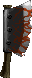
Cleaver |
|
Poisoned Water Supply
当你进入游戏后, 如果发现Cain 身后的井水是黄色, 那么说明存在这个任务. Pepin 拜托你找出毒水来源, 解救受毒害的村民, 在 Dark Passage 找到下毒的 Goat, 消灭它后泉水恢复正常. Pepin 送 Ring of Truth 感谢你的帮助. |
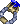
Ring of Truth |
第三层任务 |
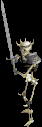
Curse of King Leoric |
[M] The Curse of King Leoric
本是荣耀明君的 King Leoric, 因被 Diablo 侵入他的心灵而变成残暴易怒多疑的黑心国王, 最后虽被骑士长 Lachdanan 刺死, 但其诅咒仍存在于 Tristram 的 Labylinth. Ogden 请你终结村人恶梦, 让黑心国王永远安息...
在 King Leoric"s Tomb 找到并消灭他, 获战利品 Undead Crown.
多人游戏: 可以在第 3 层直接找到它. 同时他拥有了复活骷髅的能力, 掉落随机魔法物品. |
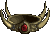
Undead Crown |
第四层任务 |
|
Ogden's Sign
Ogden 的酒店招牌被偷了! 他拜托你帮他找回招牌. 原来是被 Snotspill 偷走的, 但是又被其他怪物抢走, 她要你以这块招牌交换通往第五层的路, 不过会拿走东西后想杀人灭口. 可以先将招牌还 Ogden 后, 再除去她便可. Ogden 会送你一顶还不错的宝石头盔 Harleqin Crest. |
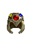
Harleqin Crest
|
Goat
|
Gharbad the Weak
这个狡滑的 Goat, 骗你说它很虚弱而希望你别杀他, 并给你一件随机魔法兵器 (在他面前挥剑次数决定物品质量). 等你杀光这层敌人, 和它谈话后, 它会偷袭你... |
N/A |
第五层任务 |
Blood Stone
|
Valor
有一个传说, 当黑暗再度降临时, 英雄 Arkine 沉睡的护甲 Valor 便会再度为新的光之英雄出世....
找到三颗 Blood stone , 置于台上, Arkaine's Valor 将再度出土. 你将取得目前为止最强的盔甲. |
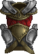
Arkaine's Valor |
|
The Magic Rock
Grisword 请你帮他找一块天堂之石, 你可以在第五层找到这块石头, 交给 Grisword 后, 他以 Empyrean Band 这只戒指做为酬谢. |
Empyrean Band |
第六层任务 |

Chamber of Bone |
The Chamber of Bone
在 Camber of human bone 中, 隐藏着传说中的法术知识, 在你通过不死战士所布满的通道后, 发现一本记载召唤三头魔龙防护你的法术知识 Ancient Tome, 并学会法术 Guardian. |
Guardian |
第七层任务 |
N/A |
Halls of the Blind
在 Hall of the Blind 中有着一个魔法项链被隐藏着, 只有勇者才能进入并取得它: Optic Amulet. |
Optic Amulet |
第八层任务 |
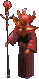
Zhar the Mad |
Zhar the Mad
一个疯狂的魔法师, 只要将门带上, 便可轻易的消灭他. |
随机魔法书
|
第九层任务 |
|
Black Mushroom
你会先找到一本书, 因看不懂而找 Cain 帮忙鉴定,Cain 要你去找法师 Adria 解读, Adria 要你去寻找一种 Black Mushroom 给她, 她将可找出配制永远提升属性的 Elixir 的方法找到并给 Adria, 她要你找 Sample 给 Pepin, 在第十层某一只砍死的怪物身上掉下一个 Brain Stone, 拿给 Pepin, 他则送一瓶 Elixir 给你, 而在你到达十三层后, 就可以向他们两人购买提升属性药水了.
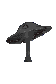
blackmushroom |
|
|
|
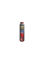
Elixir |
N/A |
Slain Hero
在第 9 层, 你可以在地上找到一个濒死的英雄, 与他对话后可以获得一件装备. 战士是重型盔甲, 浪人是长战弓, 法师则可以获得一本魔法书
|
随机装备 |
第十层任务 |
|
Anvil of Fury |
Anvil of Fury
Grisword 请你找到这个打造武器的魔法工作台, 找到后, Grisword 会打造一把叫做 Grisword Edge 的火焰魔法剑酬谢你. |
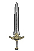
Grisword Edge |
第十三层任务 |
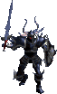
Warlord of Blood |
Warlord of Blood
在 13 到 14 层的楼梯, 有个叫 Warlord of Blood 的魔战士在看守楼梯, 嗜血的亡灵, 击败他才能进入第 14 层, 可以用法术 Stone Cruse 定住他, 然后将他快刀砍死... |
架上随机装备 |
第十四层任务 |
Lachdanan
|
Lachdanan
Gold Elixir 如果没碰到 Warlord of Blood 则会遇到这个任务.Lachdanan 在第 14 层受着 Diablo 的折磨, 他希望你帮他找到传说中的 Gold Elixir, 让他能够以荣耀的骑士长身份安息, 于是你在第15 层中找到这药剂, Lachdanan 留下他的装备给你. 获得最强之盔 Veil of Steel 和一件随机的装备. |
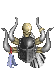
Veil of Steel
随机装备 |
第十五层任务 |
N/A |
在这层会找到叫 Staff of Lazarus 的法杖. 带回城内给 Cain 鉴定之後, 他会告诉你他的真名, 并拜托你消灭大主教 Lazarus 解救小王子 Albrecht, 于是通往 Archbishop Lazarus 的红色光门便会开启于第 15 层魔法阵的旁边.
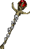
Staff of Lazarus |
|
red portal
|
|
N/A |
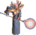
Archbishop Lazarus |
[M] Archbishop Lazarus
释放出 Diablo 的灵魂, 并带给村民无限痛苦和恐惧的大主教 Lazarus, 只有消灭已被 Diablo 控制的大主教最后的大门才会开启. 消灭 Lazarus 后, 15 层的魔法阵开启了通往 Diablo 藏身处之路.
多人游戏: Lazarus 可以在第 15 层直接找到.
|
随机装备 |
第十六层任务 |

Diablo
|
[M] Diablo
地狱的王者, 恐惧之王 Diablo 占据了王子 Albrecht 的身躯, 重新回到这个世界, 你必需再次击败它, 然后与启蒙导师 Tal Rasha 一样, 为了封印这个魔神, 将 Soulstone 与 Diablo 的灵魂永远封印在你的体内, 并永埋 Horadrim 圣殿之下........
好一个悲剧英雄, 不是吗!? |
The End |
|
|